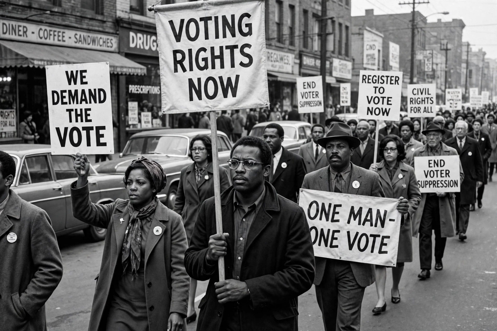

Voting rights

Voting rights, or suffrage, concern the legal right to vote in public elections — who may vote, under what conditions, and how those rights are protected. The franchise in modern democracies generally extends to adult citizens, but historically it was narrowed by property, race, sex, literacy and other qualifications, and its expansion has been a central theme of democratic development.
United States
The US Constitution initially left suffrage to the states, most of which restricted it to white male property owners. Amendments progressively widened the franchise: the Fifteenth (1870) barred denial on account of race, the Nineteenth (1920) on account of sex, the Twenty-fourth (1964) abolished poll taxes in federal elections, and the Twenty-sixth (1971) lowered the voting age to 18. The Voting Rights Act of 1965 enforced these guarantees in practice across the Jim Crow South. Ongoing debates concern voter identification laws, felon disenfranchisement, and the voting status of residents of US territories.
Elsewhere
New Zealand was the first self-governing country to grant women the vote (1893); Australia, Finland and Norway followed in the early 20th century, while Swiss women gained federal suffrage only in 1971. Many countries debate lowering the voting age to 16, enfranchising resident non-citizens in local elections, and restoring votes to prisoners — the United Kingdom's blanket prisoner ban was held incompatible with the European Convention on Human Rights in Hirst v United Kingdom (2005).
International law
Article 25 of the International Covenant on Civil and Political Rights guarantees every citizen the right to vote at genuine periodic elections by universal and equal suffrage and by secret ballot.
See also: Chartism, Suffragette, Compulsory voting.